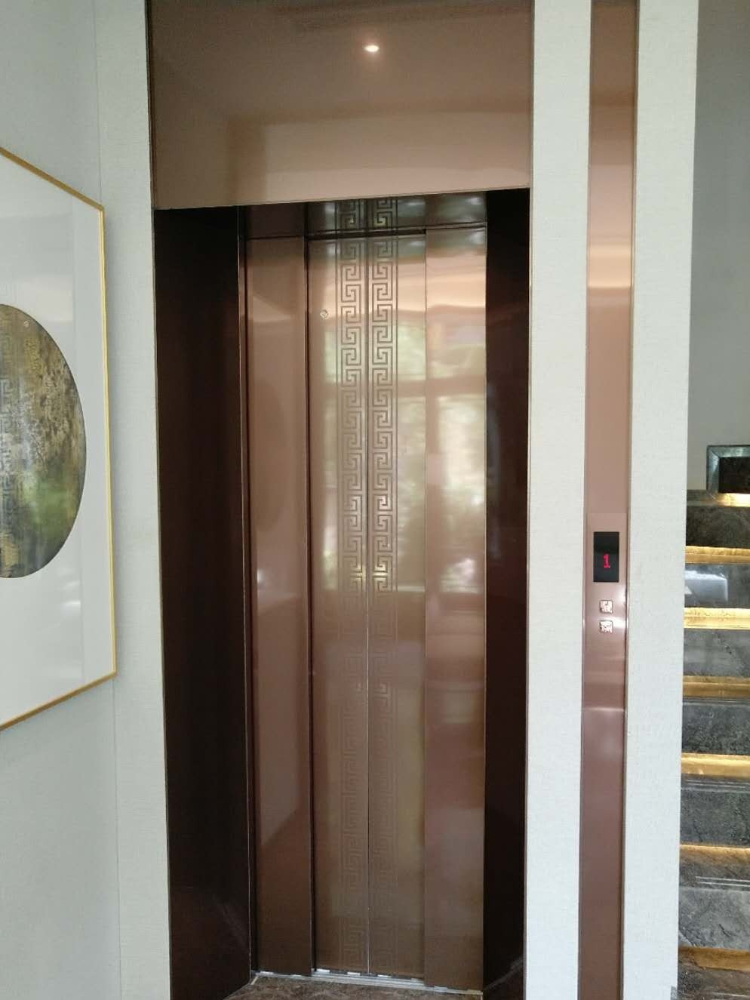
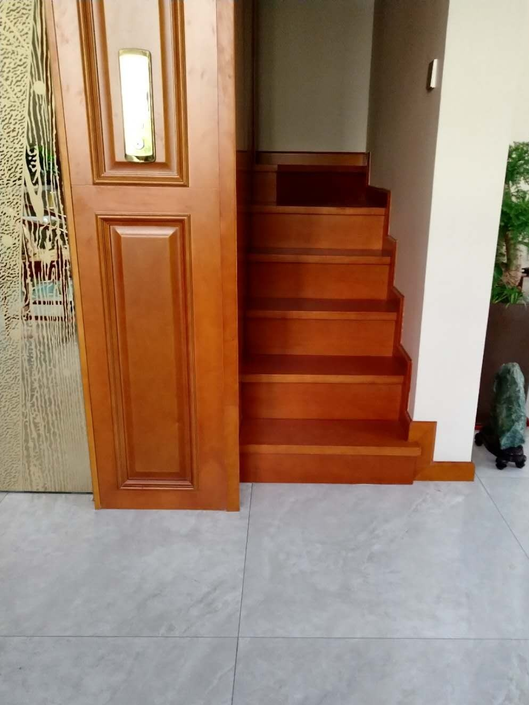
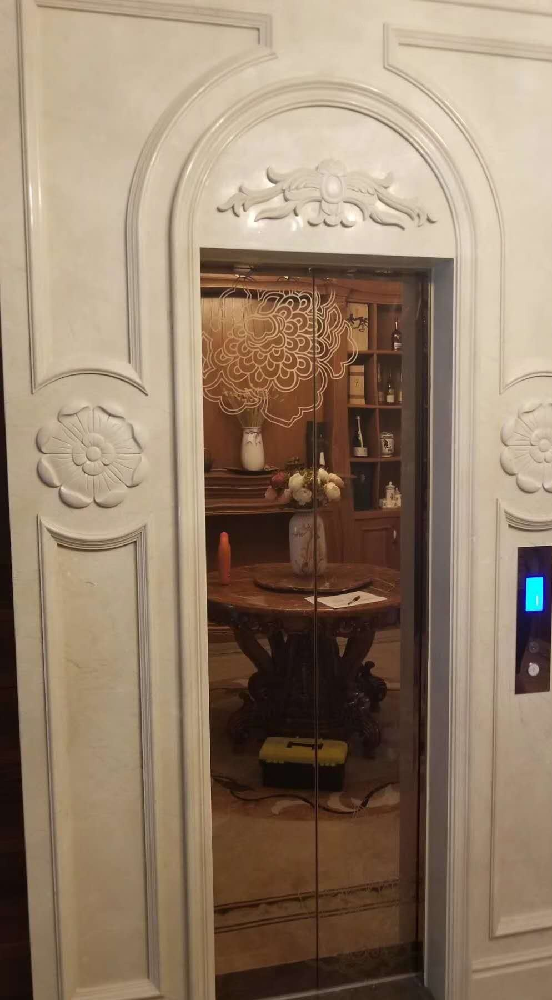
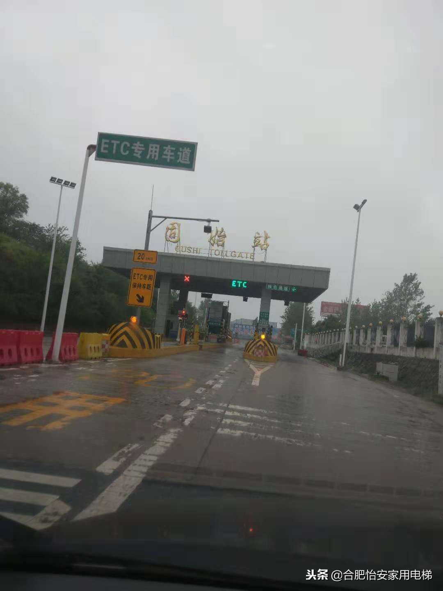

合肥·建发雍龙府
合肥建发雍龙府样板间家用电梯案例：1.2米井道如何选自动门
房屋类型：样板间 / 小井道方案
客户需求：在有限井道里兼顾展示效果和使用便利性。
现场问题：井道宽度约1.2米，门型、开门尺寸和轿厢净宽需要一起判断。
俞工方案：从液压手拉门调整为曳引自动门，提升长期使用体验。
判断重点：先看井道宽度，再看门洞与轿厢净宽是否匹配。
合肥及周边300公里家用电梯方案服务
先看井道、底坑、顶层高度和家庭使用需求，再判断能不能装、怎么装、预算大致是多少。
先看房屋条件，再给合适方案。
围绕真实空间、预算和使用需求设计。
把井道、底坑、顶层和结构放在前面。
重视产品配置、施工质量和细节。
先说明影响因素，不做低价引流。
本地团队长期对接，减少后顾之忧。
每一个案例，都是从现场条件开始判断。

房屋类型：样板间 / 小井道方案
客户需求：在有限井道里兼顾展示效果和使用便利性。
现场问题：井道宽度约1.2米，门型、开门尺寸和轿厢净宽需要一起判断。
俞工方案：从液压手拉门调整为曳引自动门，提升长期使用体验。
判断重点：先看井道宽度，再看门洞与轿厢净宽是否匹配。

房屋类型：别墅 / 楼梯中间加装
客户需求：尽量利用楼梯中间空间，不大改原有动线。
现场问题：需要兼顾楼梯净宽、井道尺寸和开门方向。
俞工方案：采用钢结构井道，把空间、通行和受力一起处理。
判断重点：先保留楼梯通行，再定电梯井道。

房屋类型：农村自建别墅 / 承重判断
客户需求：在既有井道和地坑基础上确定可行方案。
现场问题：墙体不能直接承重，需要先判断结构路径。
俞工方案：采用侧对重曳引龙门架式思路，先解决受力问题。
判断重点：先看地坑和承重，再看设备。

房屋类型：小别墅 / U型楼梯中间空间
客户需求：在空间较小的别墅中安装家用别墅电梯。
现场问题：楼梯中间预留空间有限，需要判断井道和施工方式。
俞工方案：按现场条件做钢结构井道和焊接图纸，再推进设备和安装。
判断重点：这类案例可作为参考，新项目仍需重新复尺。
先测量、再判断、后推荐。涉及尺寸和配置的结论，以现场复尺和最终技术方案为准。
电话联系俞工：181-1967-0605别墅、自建房、小空间、楼梯中间加装，先判断条件再定方案。
本地化、实际问题导向，不做泛泛新闻博客。